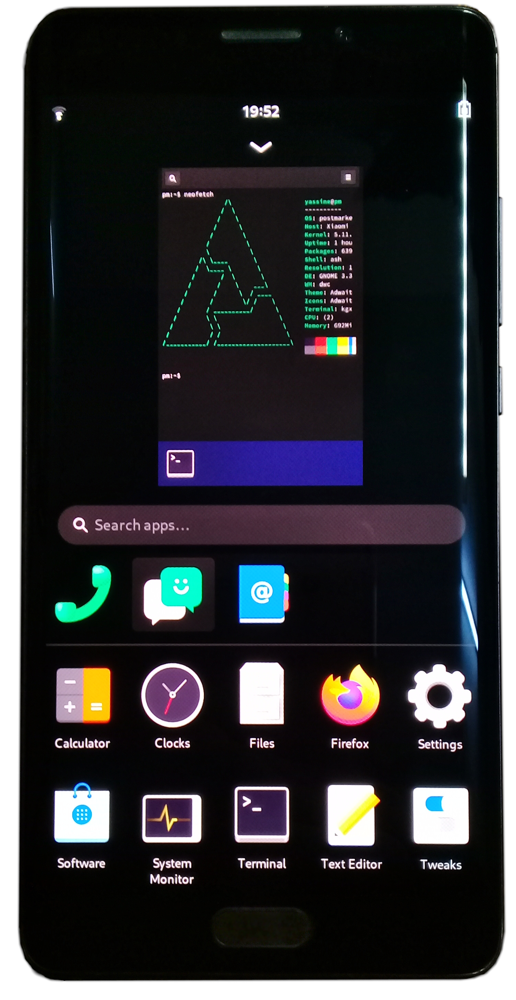

Xiaomi Mi Note 2 (xiaomi-scorpio)
|

Xiaomi Mi Note 2 running Phosh |
|
| Manufacturer | Xiaomi |
|---|---|
| Name | Mi Note 2 |
| Codename | xiaomi-scorpio |
| Released | 2016 |
| Category | community |
| Original software | Android 6.0 (Marshmallow), MIUI 8.2 - Upgradeable to Android 8.0 |
| Hardware | |
| Chipset | Qualcomm MSM8996Pro Snapdragon 821 |
| CPU | 2x 2.34 GHz Kryo & 2x 2.19 GHz Kryo |
| GPU | Adreno 530 |
| Display | 1080x1920 OLED |
| Storage | UFS 2.0 64/128GB |
| Memory | 4/6 GB |
| Architecture | aarch64 |
| Unixbench Whet/Dhry score | 2636.3 |
{kind=link}
| USB Networking |
Works
|
|---|---|
| Flashing |
Works
|
| Touchscreen |
Works
|
| Display |
Works
|
| WiFi |
Works
|
| FDE |
Partial
|
| Mainline |
Works
|
| Battery |
Partial
|
| 3D Acceleration |
Works
|
| Audio |
Partial
|
| Bluetooth |
Works
|
| Camera |
Partial
|
| GPS |
Broken
|
| Mobile data |
Broken
|
| SMS |
Partial
|
| Calls |
Broken
|
| USB OTG |
Works
|
| NFC |
Works
|
| Accelerometer |
Broken
|
|---|---|
| Magnetometer |
Broken
|
| Ambient Light |
Broken
|
| Proximity |
Broken
|
| Hall Effect |
Broken
|
| Barometer |
Broken
|
| Power Sensor |
|
| Keyboard |
Unavailable
|
|---|---|
| Touchpad |
Unavailable
|
| USB-A |
Unavailable
|
| HDMI/DP |
Unavailable
|
| Ir TX |
Works
|
| TrustZone |
Broken
|
| FOSS bootloader |
|
|
This device is based on the
Snapdragon 821
.
See the SoC page for common tips, guides and troubleshooting steps |
Contributors
- Tooniis
Maintainer(s)
- Tooniis
Users owning this device
- Tooniis ( Notes: 64GB Storage, 4GB Memory)
How to enter flash mode
Hold Power + Volume Down while the phone is turned off. This will make the phone boot into fastboot mode
Installation
You will need to unlock the bootloader in order to be able to flash anything onto the phone.
Installing TWRP
before doing anything else is recommended, as it makes dealing with the phone easier later on, and allows for quick restoration by taking backups of
/system
and
/boot
, then flashing them back in order to restore the device to its original state. Note that this method has only been tested with LineageOS, and running its installation ZIP in TWRP after restoring the backup was necessary to get it to boot, otherwise it would just keep loading forever.
|
|
NOTE: Flashing to the system and boot partitions will wipe the Android core but will leave all apps and user files. If you want to be able to easily restore Android, it is recommended to backup both partitions using the method above. |
|
|
WARNING: Flashing to the data partition will erase all user data! Make sure all important files are backed up before flashing. |
Prebuilt Images
Official images are available for this device. Those can be directly flashed with fastboot for a quick install.
Picking images
Choose an image for your device from the download page.
Installing
|
|
Replace
<image>
with the name of your image where necessary.
|
Once downloaded, decompress the images with
xz
:
$ xz -d <image>-xiaomi-scorpio.img.xz $ xz -d <image>-xiaomi-scorpio-boot.img.xz
Once decompressed, you may flash the main image to either:
-
/system: ~3.2 GB. Will allow you to keep the main part of your existing Android installation as well as your data.
$ fastboot flash system <image>-xiaomi-scorpio.img
-
/userdata: Extends close to the remaining size of your storage. Will wipe your Android installation along with your data.
$ fastboot flash userdata <image>-xiaomi-scorpio.img
Then you may either flash the boot image:
$ fastboot flash boot <image>-xiaomi-scorpio-boot.img
or boot it directly without flashing:
$ fastboot boot <image>-xiaomi-scorpio-boot.img
Manual Build
Initialization and Building
Follow the Installaton Guide to initialize pmbootstrap and build/install everything necessary.
Flashing
Once you reach the flashing step:
- Flash the rootfs:
$ pmbootstrap flasher flash_rootfs
|
|
NOTE:
If you need more space in the rootfs, you can also flash to the data partition by appending
--partition data
to this command. More information about the partitions can be found in the prebuilt images section above.
|
- Flash the kernel and initramfs to the boot partition:
$ pmbootstrap flasher flash_kernel
You can also avoid flashing them and instead, boot the kernel directly:
$ pmbootstrap flasher boot
Mainline
MSM8996 common mainline kernel fork
| Feature | Components | Status | |
|---|---|---|---|
| USB |
TI TUSB320L (extcon)
PMI8996 SMBCharger (OTG supply) |
Y | SMBCharger OTG VBUS driver not upstream. |
| UFS | Samsung KLUCG4J1CB-B0B1 (64GB variant) | Y | |
| Display |
MDSS
1,2
LG Display SW43101 |
Y | Panel driver not upstream yet. |
| GPU | Adreno 530 1 | Y |
Somewhat glitchy, causes some artifacts and tearing in GNOME and GTK4 due to a possible mesa bug. Can be mitigated by disabling binning by setting
FD_MESA_DEBUG=nobin
.
|
| WiFi | QCA6174a | Y | |
| Bluetooth | Y | ||
| Modem | MSS 1 | P |
Sending and receiving SMS works.
Mobile data will require a driver for IPA. Calls have not been tested, and while it might be technically possible to make and receive calls, it will not be of much use since the earpiece and microphones are not working. |
| GNSS | N | requires PDS support in gpsd | |
| NFC | NXP PN548 | Y | |
| IR Transmitter | PM8994 LPG 2 | Y | |
| Audio Codec |
WCD9335 (Headphones, earpiece, microphones)
TAS2555 (Speaker) |
P |
Headphones output only. Headphones mic input is very quiet for some reason.
Will require a driver for speaker codec. |
| Video Codec | Venus 1 | Y |
Tested with
gst-launch-1.0 videotestsrc ! videoconvert ! v4l2vp8enc ! queue ! v4l2vp8dec ! xvimagesink
|
| Battery |
PMI8996 SMBCharger/Fuel gauge
2
SMB1351 2 |
P | Fuel gauge works. Charger can reach its maximum current at 5V. Faster charging (9V) will require extra handling in the PMI8996 SMBCharger driver, and for better efficiency (and possibly even faster charging) a new driver for SMB1351. |
| Rear Camera |
Sensor: Sony IMX318
Lens Actuator: Asahi Kasei Microelectronics AK7375 |
P | Sensor has a basic driver with support for 3 modes and analogue gain control. |
| Front Camera | Sensor: Sony IMX268 | N | Needs a driver. |
| Sensors |
SLPI/SSC
1,2
Gyroscope/Accelerometer: LSM6DSM Magnetometer: AK09915 Pressure: BMP280 Proximity + Light: CM36686 |
N | Work in progress SSC driver . |
| Touchscreen | Atmel MaxTouch | Y | |
| Touchkeys | Cypress StreetFighter | Y | |
| Fingerprint Reader | FPC1020 | N |
Work in progress fingerprint subsystem and driver
.
Not supported by libfprint due to its small resolution of 192x56. A new algorithm is required to make use of it. |
| Buttons |
TLMM
1,2
/PM8996 GPIO
2
(Home, Volume Up)
PM8994 PON/RESIN 2 (Power, Volume Down) |
Y | |
| Haptics | PMI8996 Haptics 2 | Y | Driver not upstream yet. |
| LEDs |
PM8994 LPG
2
(Keypad backlights)
PMI8996 LPG/Flash 2 (Status light, Flash) |
P | Will require a driver for flash. |
1 : Internal component
2 : Driver of component
Known issues:
-
The display comes up blue after initialization sometimes. Rebooting makes it work usually.This issue has not appeared since MSM DRM was set to be compiled as a module. Should be completely resolved with the addition of an interconnect driver. -
System locks up when accessing memory intensively. This might be caused by writing to a protected area of memory.Adding this reserved memory region fixed it. -
System crashes when modem and ADSP get powered up at the same time.Fixed temporarily through pmaports!2283 . -
USB VBUS turns off instantly when a USB device is plugged into an already plugged in OTG adapter. For now the OTG adapter must be plugged into the phone with the USB device plugged into it already.Fixed . -
WiFi range is bad. This is due to lack of board firmware. Supplying board firmware made from the vendor firmware for the downstream QCA_CLD driver makes it lose all APs in a scan as soon as an attempt is made to connect to one of them, which means it is impossible to connect.Fixed in pmaports!3271 .
See also
- pmaports!1576 Initial merge request
- Device package
- pmaports!2063 Switch to mainline kernel fork